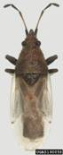

ORNAMENTAL PLANTS :: PEST ::DUSKY COTTON BUG
1. Dusky cotton bug: Oxycarenus laetus (Lygaeidae: Hemiptera)
 |
Hostrange: Hibiscus rosasinensis, Dombeya natalensis, Bougainvillea, Jasminum grandiflorum, J. multiflorum, J.humile, Bauhinia, Plumeria .
|